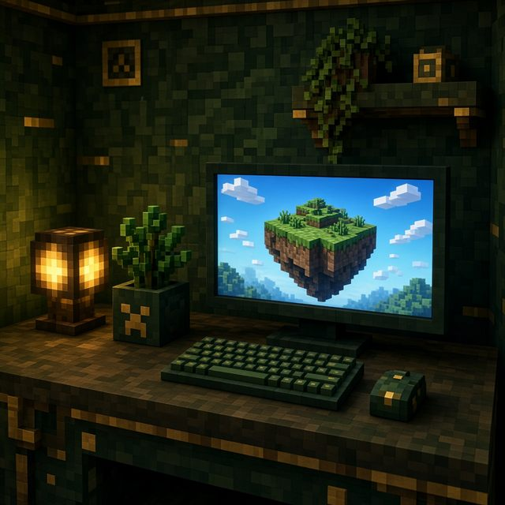
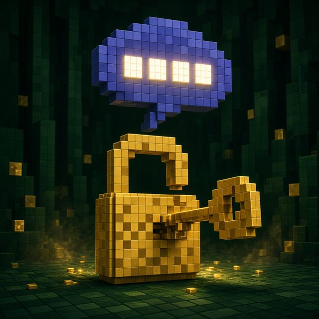
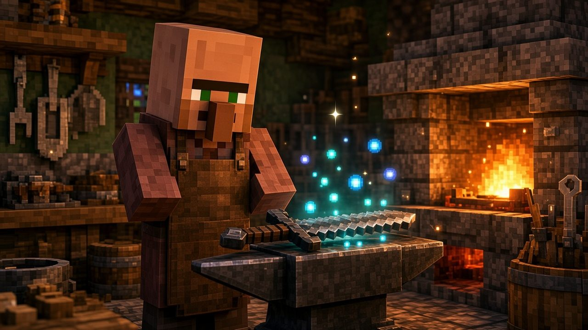
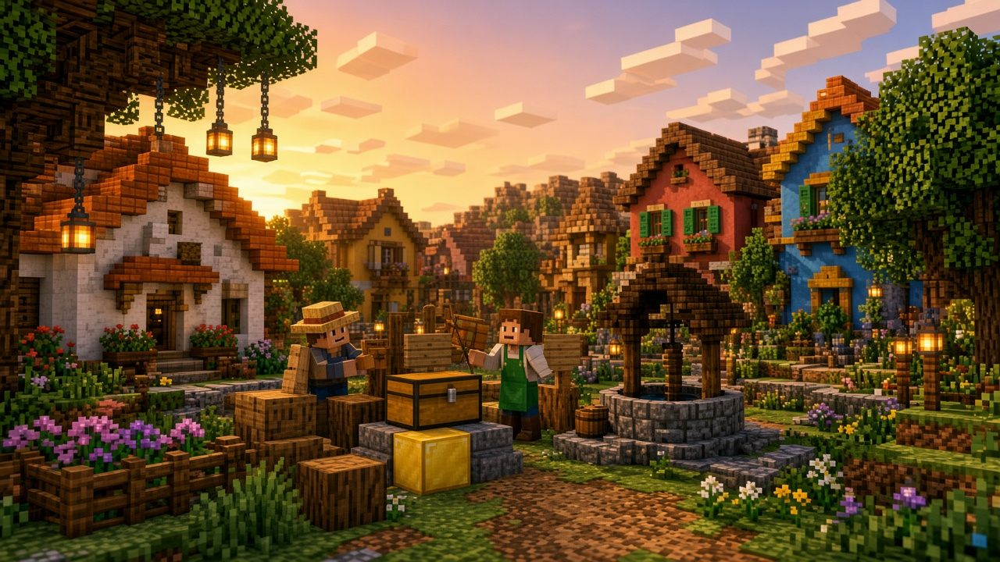
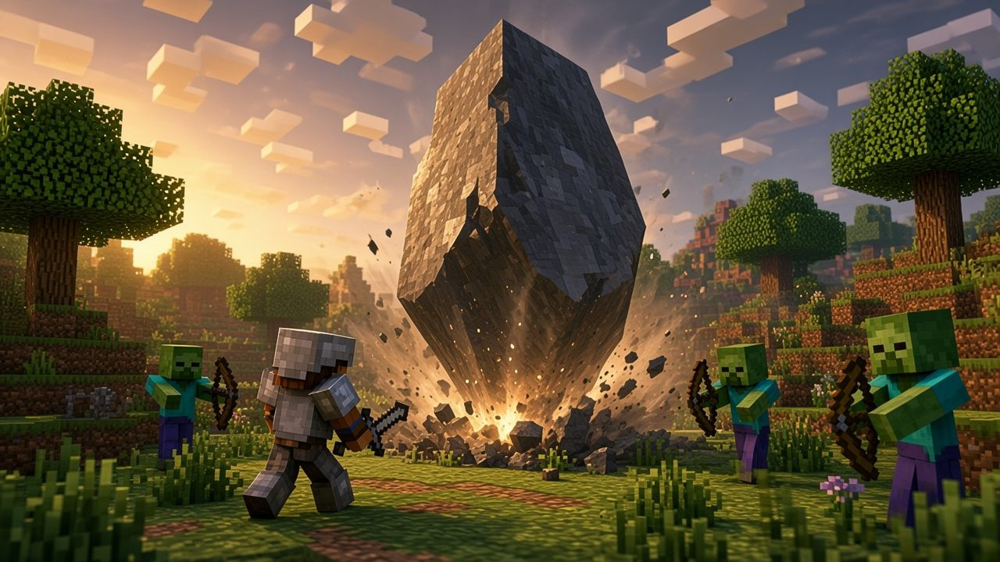
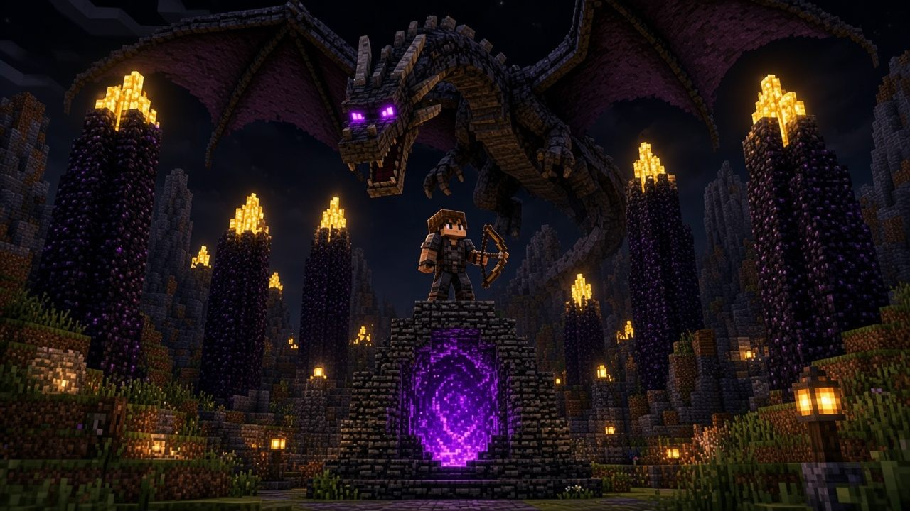
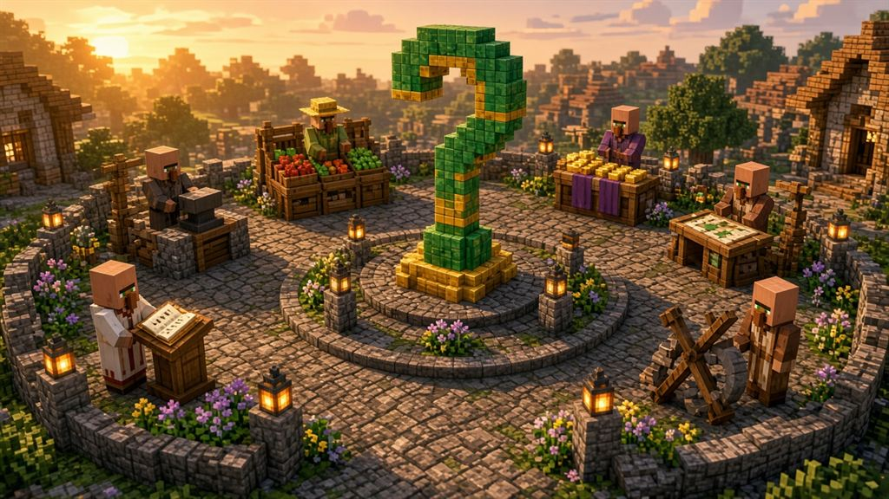
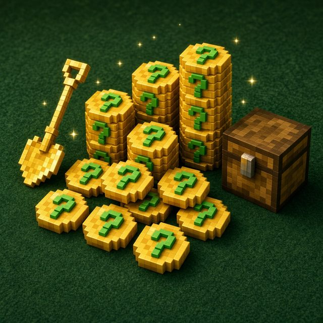
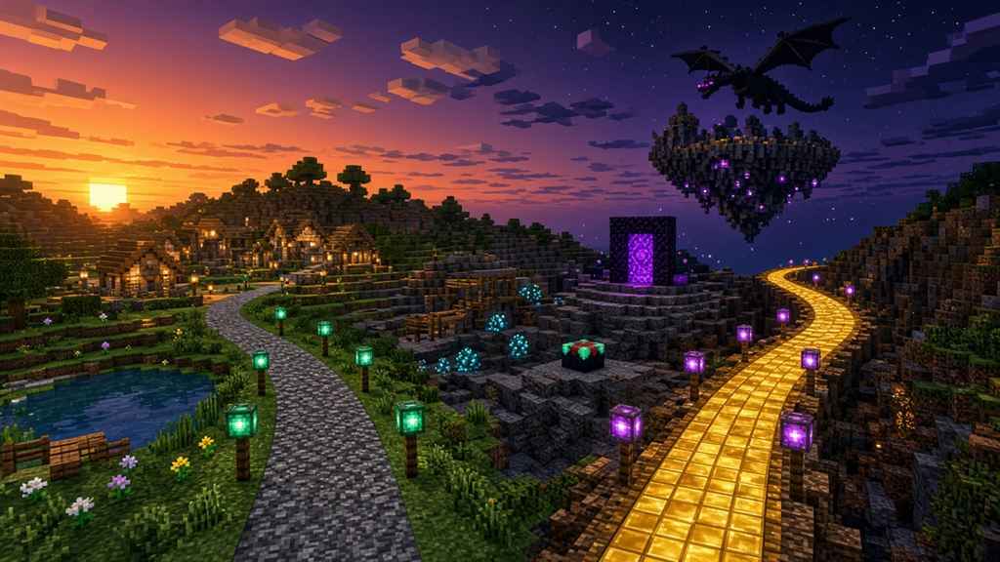
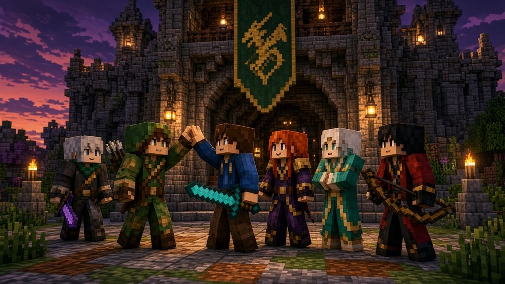

Barrio
Tu casa
Al entrar te dan una pala de oro. Clic derecho en una parcela libre y es tuya. La primera cuesta 25 duros. Lo que construyes en el barrio no se borra.

Minecraft Java · 26.1.2 · sin cuenta de Minecraft
Un servidor de Minecraft en español. Te compras una parcela en el barrio, construyes tu casa y sales al survival a picar, pelear y cazar al dragón. Jugar es gratis.
Copiado. Pégalo en Multijugador, en Dirección del servidor.
Cómo entrar Unirse al Discord Ver la tiendaPara entrar

La versión 26.1.2, en el ordenador.

En Multijugador: play.preguntones.es

Al conectar, dale a Sí. Sin el pack no se entra.

La primera vez, cuatro cifras en Discord y te inventas una contraseña.
El servidor
Barrio
Al entrar te dan una pala de oro. Clic derecho en una parcela libre y es tuya. La primera cuesta 25 duros. Lo que construyes en el barrio no se borra.

Plaza
Sube tu espada, tu armadura o tu pico de +0 a +9. Cada intento cuesta unos pocos duros y, si sale mal, puedes perder la pieza.

Plaza
Compra y vende con otros jugadores. Cobras aunque no estés conectado. El barrio se queda el 10 % de cada venta.

Survival
De vez en cuando cae una piedra del cielo cerca de ti. Al golpearla salen monstruos. Rómpela y te llevas el botín; si pegáis varios, se reparte.

Survival
El survival es un mundo aparte. Cuando cae el dragón, 48 horas después se borra y empieza otro. Si lo cazáis entre dos o más, ganáis duros y tierra en el Reino del Dragón.

Sábado
Cada sábado a las 21:30, hora de Madrid. Sale una frase y tienes 15 segundos: a la X si es falsa, a la O si es verdadera. Quien aguanta hasta el final gana 8 duros.
El spawn
Apareces aquí. Haz clic en un aldeano y te abre lo suyo.

La moneda
Entras con 0 y se ganan jugando. No se compran con euros y fuera del servidor no valen nada.

Lo del dragón es para cada uno que pega lo bastante, si sois dos o más: /dragon te dice si cuentas. Para invitar, escribe /invitar y pásale tu enlace.
Cada parcela nueva cuesta más que la anterior. Puedes tener hasta seis.

El cartógrafo de la plaza
Ocho niveles que siguen el survival: la primera caza, pescar, una aldea, los diamantes, el Nether, el End… hasta el dragón. Cada nivel que cierras deja un premio, y lo reclamas con un clic en el aldeano.

Con gente
Dudas
No. El servidor no la comprueba. Sí necesitas Discord y una contraseña que te inventas la primera vez que entras.
Por ahora no. Consola, móvil y el Minecraft de la Microsoft Store son otra edición (Bedrock). Hace falta Java, en ordenador.
En el barrio, no: sigue ahí después de cada reinicio. El survival sí: se borra 48 horas después de que caiga el dragón y sale un mundo nuevo.
Sí. Dentro de tu parcela, escribe /parcela amigo y su nombre, con los dos conectados. Las puertas las abre cualquiera; los cofres y los hornos, solo tú y quien invites.
Cada día a las 05:00, hora de Madrid, durante un momento. No se borra nada.
Pulsa Escape, el botón dorado Preguntones y luego Panel Preguntones (o escribe /menu). Desde ahí vas al spawn, a tu parcela, al survival o a tus banderas. El viaje tarda 5 segundos.
Tus cosas se quedan en una tumba con tu nombre que solo abres tú. Al reaparecer puedes pagar de 8 a 48 duros para volver al sitio, o ir andando con la brújula que te dan.
Abre el inventario con la E y pulsa la lupa de la esquina de abajo, o escribe /buscar. Busca en lo que llevas encima y en los cofres de tus parcelas.
Si tu nombre es el de una cuenta de Minecraft, sale su skin. Si no, escribe /skin set y el nombre de la skin que quieras.
Solo el pase VIP: 4,99 €, una vez. Cambia cómo te ves, no cómo juegas: no da duros, equipo ni ventaja. Está en la tienda.
Multijugador
Copia la dirección y pégala en Multijugador, en Añadir servidor.
Minecraft es una marca de Mojang y de Microsoft. Este servidor es independiente: no está patrocinado ni asociado con ellos.